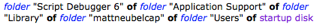

|
Source |
|
Source view in a value explorer presents the value as the source language (AppleScript) would present it.

For example:
- In Best view, an object reference is an outliner. In Source view, an object reference is the reference.
- In Best view, a list is shown as an outliner. In Source view, a list is delimited by curly braces.
- In Best view, a string is shown as the text of the string. In Source view, a string is delimited by quotation marks.
When an explorer presents an Objective-C object value returned by AppleScriptObjC, source view becomes Desc view, where “Desc” refers to Objective-C’s description method. In effect, Script Debugger shows you the object as NSLog would show it in Xcode’s console. For example:
use framework "Foundation"
set f to current application's NSURLComponents's componentsWithString:"http://www.example.com"
The result, f, is displayed in Desc view as:
(__NSConcreteURLComponents) <NSURLComponents 0x7fb865871470> {
scheme = http, user = (null), password = (null),
host = www.example.com, port = (null), path = ,
query = (null), fragment = (null)
}
You can show more than one view at once. To do so, hold Shift as you switch views. The result is a split-pane display of multiple views.